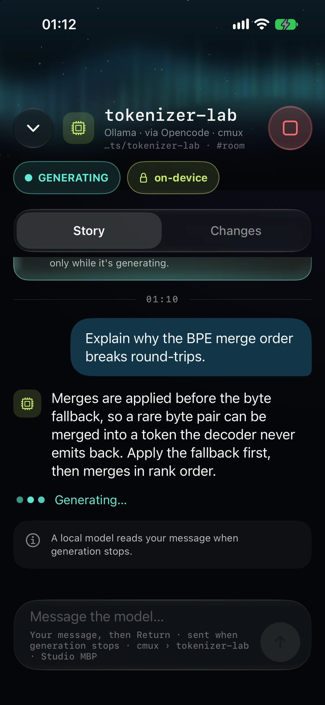

Live sessions
Every session, in your pocket.
Follow each agent's story, its terminal screen and its changes as they happen, then steer or stop it. Live session content is end-to-end encrypted.
Claude Code
Codex
Local models
